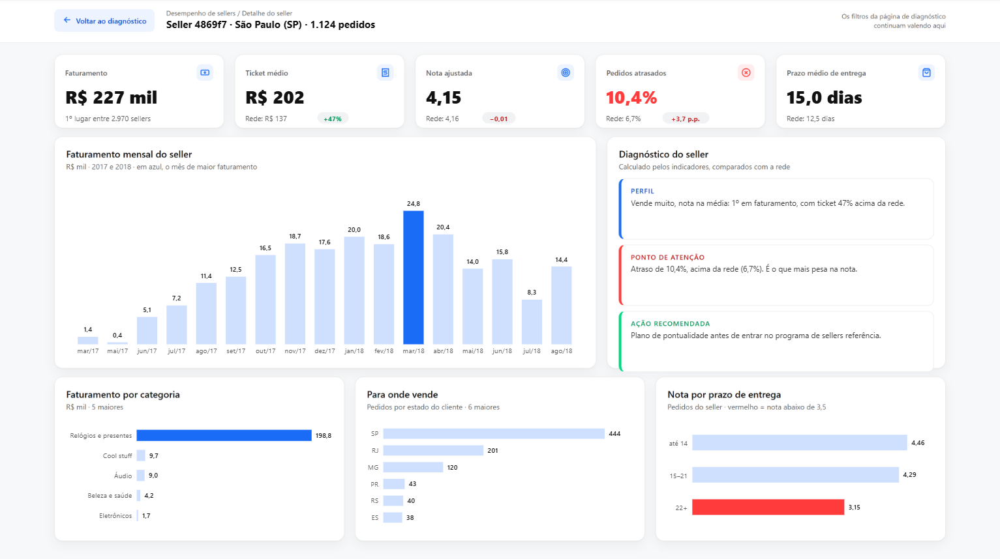

As formas e caixas de texto do Power BI não reproduzem um layout desenhado com cuidado. Então o relatório é gerado por um script: o layout vira a imagem de fundo e cada visual é criado, transparente, exatamente onde o protótipo manda.
Duas páginas desenhadas com a identidade visual, com os números reais, aprovadas antes de abrir o Power BI.
dashboard/prototipo/Onde entra um dado, o HTML tem uma vaga vazia com data-v="...": 64 vagas em 3 páginas.
Mede a posição de cada vaga (--dump-dom) e fotografa a página em 2x (--screenshot).
page.json com a imagem de fundo e um visual.json transparente por vaga: cartões, colunas, barras, dispersão, tabelas, filtros e botões.
Números, títulos e cores vêm das medidas DAX; filtros, drill-through e dica de ferramenta funcionam normalmente.
